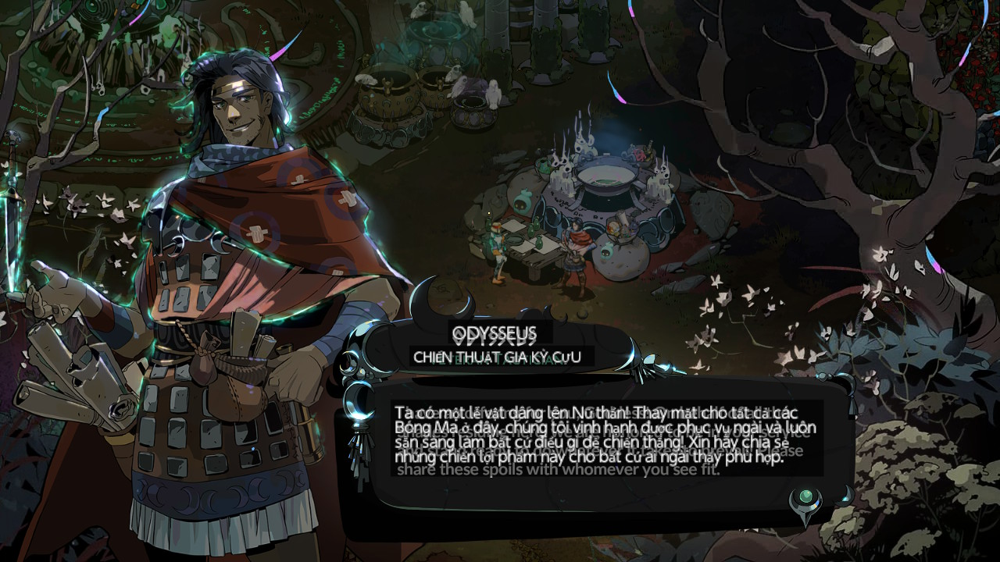

Ngắt kết nối DBI, dùng Switch (Atmosphère) và bật Wi-Fi.
Vào game, mở Ultrahand: ZLZR↓, rồi chọn Translate
Bấm B để ẩn overlayĐừng chọn "Thoát overlay", nếu không phím tắt không hoạt động
Gặp chữ cần dịch, bấm LRZR rồi chờ 2 đến 10 giây
Chạm màn hình hoặc bấm nút bất kỳ để ẩn bản dịch
